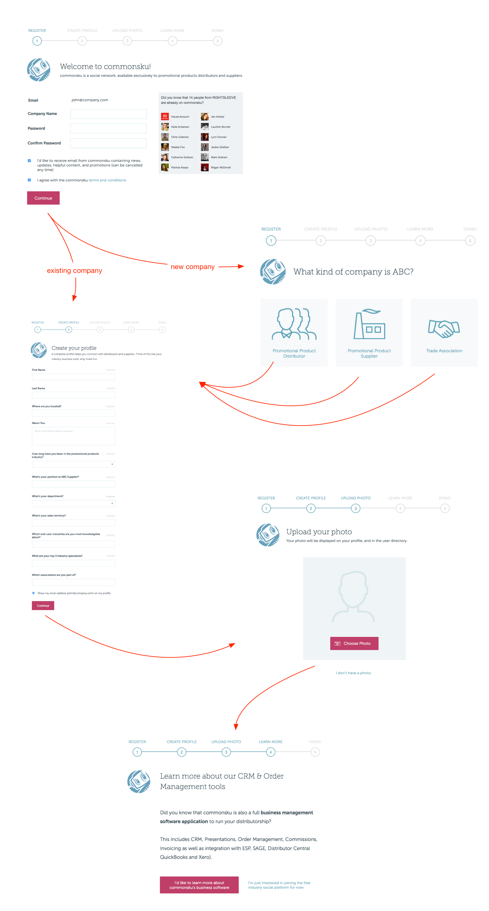
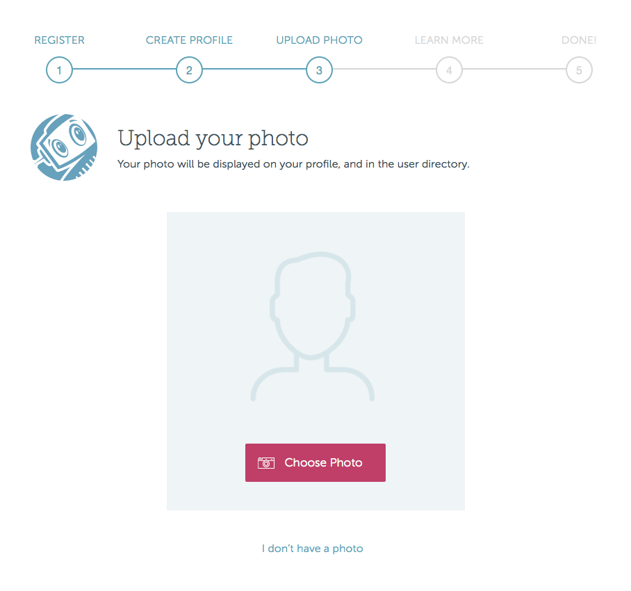
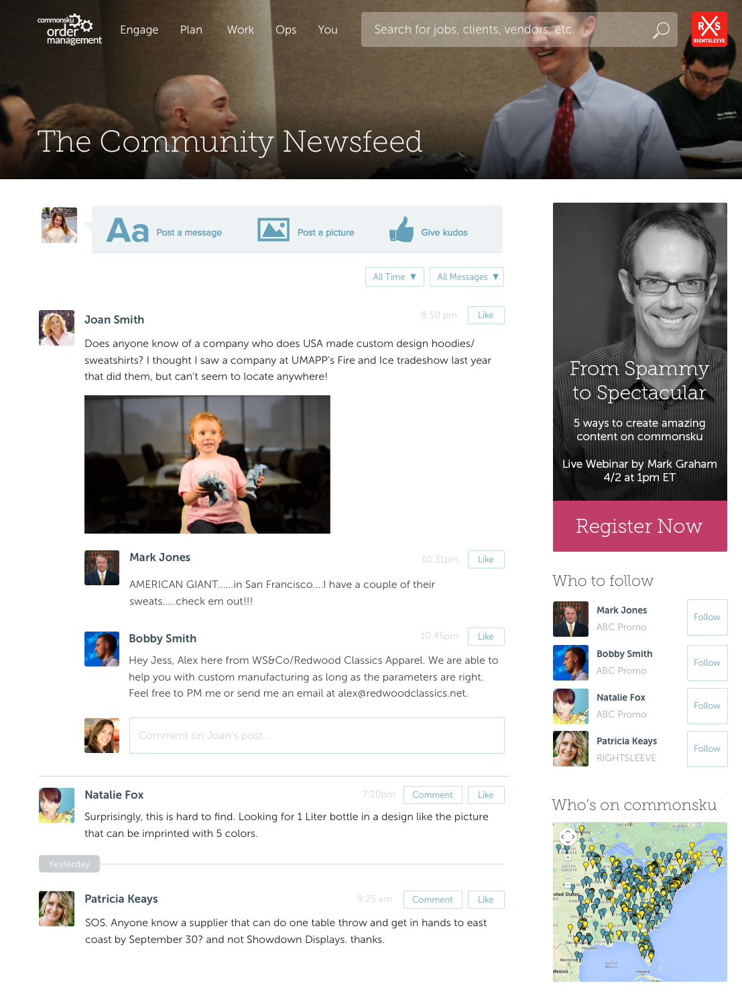
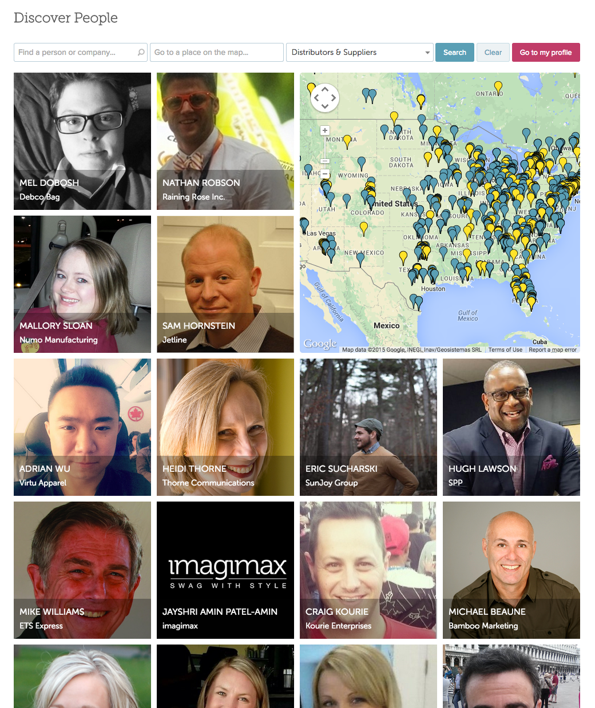
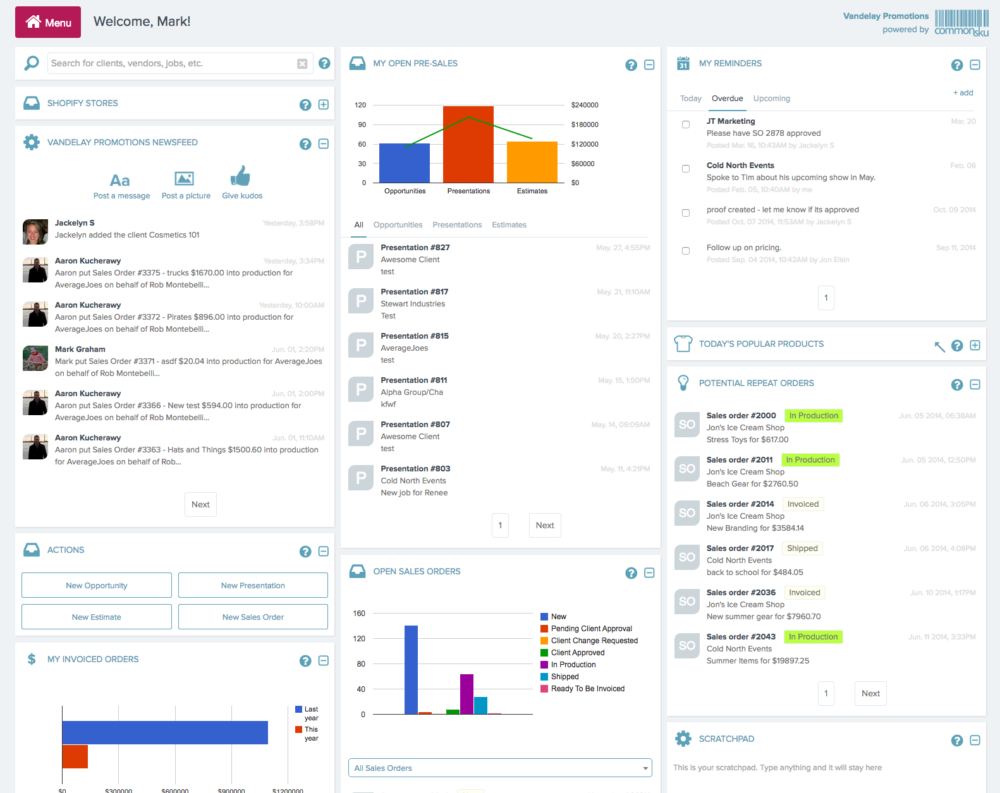
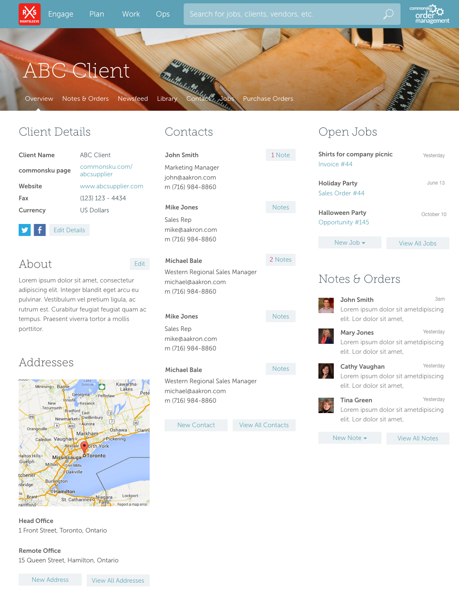
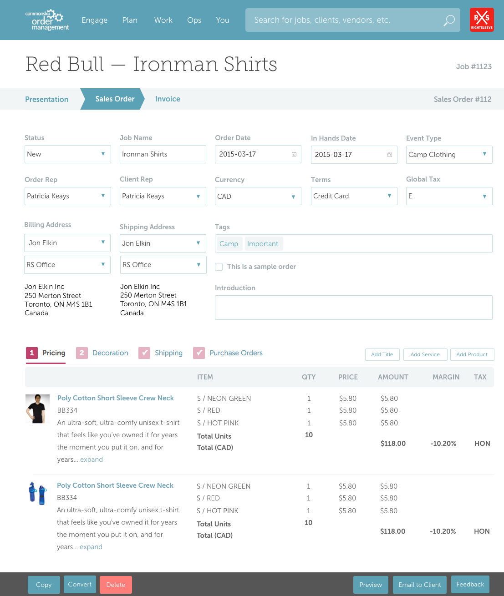
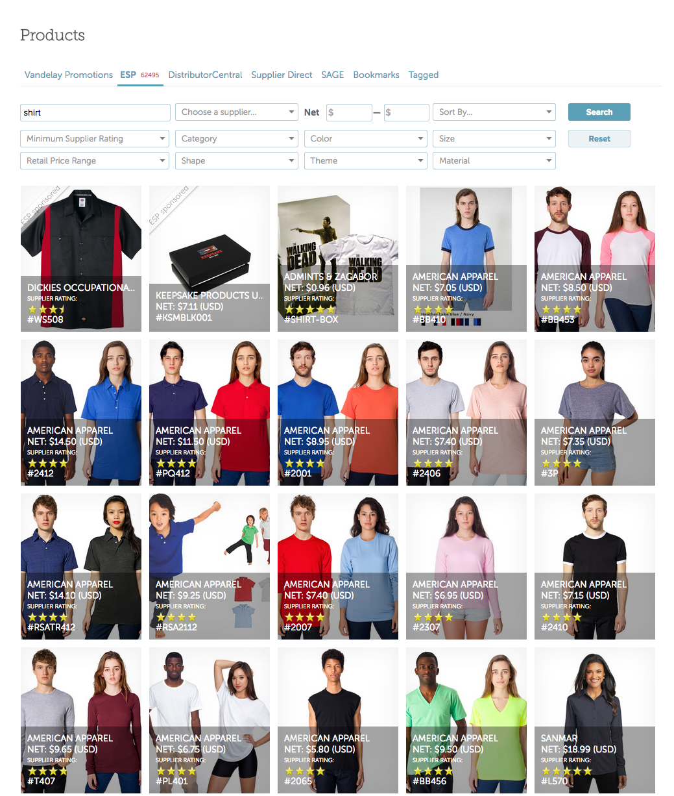
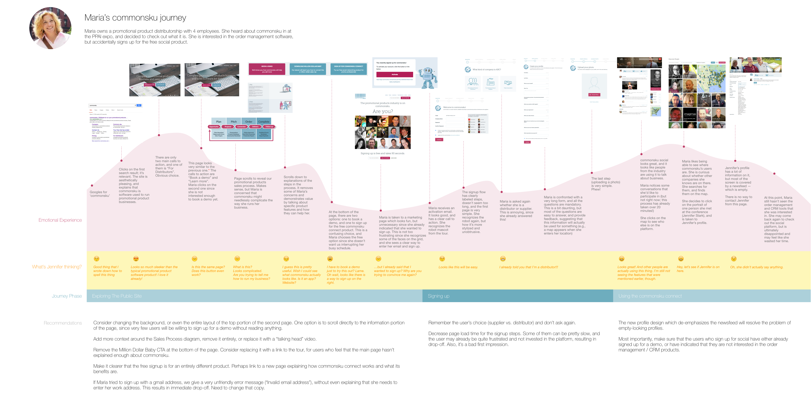

Commonsku is a web-based CRM, order management, and social collaboration tool for the promotional products industry. It allows promotional products distributors to eliminate inefficient paper or spreadsheet-based systems and streamlines their order management process.
It also functions as a community for collaboration and networking between promotional products distributors and suppliers.
I joined commonsku in 2011, pre-launch, and am solely responsible for UI and UX design and front-end development (PHP, Javascript, jQuery, Backbone.js, and CSS).
I established the brand guidelines, and implemented the public-facing marketing site, HTML emails, and landing pages for various marketing campaigns.
I communicated my designs through sketches, wireframes, comps, interactive mockups, interactive HTML prototypes, and style tiles. I then continuously evaluated and revised the designs based on user feedback, user tests, journey maps, and red route analysis.
The commonsku public facing site is targeted at two different types of clients: promotional products distributors, and promotional products suppliers. Visitors start the flow by selecting the type of company that they work for. They can then read the ways in which Commonsku can help them run their business.
The signup flow orients the user with a sequence map at the top of the page, and our robot mascot guides the user through the steps.
One of the signup flow steps:
The community newsfeed, available to both free and paid users, is a private space where the promotional product industry can exchange ideas, source products, and make connections.
It's used to share best practices, find great products, build closer relationships, and learn from industry experts and peers.
This page shows a map and a grid of user profile pictures. When the user zooms and scrolls the map, the grid of faces changes to reflect the newly selected area. When the user searches for a person or company, the grid shows the results, and the map resizes to the appropriate area.
The directory shows how large the community is and where most users are located. The search functionality makes it especially useful for finding familiar companies, or companies nearby.
The order management dashboard consists of a collection of tiles that the user can rearrange and collapse. The dashboard shows how the business is doing at a glance, so it's particularly useful for managers.
When the user clicks on items within the tiles, the details for the selected item slide into view within the tile. This way, many operations can be done without ever leaving the dashboard.
Distributor can create pages for their clients. The client page is used to track orders, contacts, notes, addresses, and other information about the client. Other companies like suppliers and distributors get similar pages.
Product presentations, estimates, sales orders, purchase orders, and invoices flow seamlessly from one to the other, eliminating the need to double-enter information.
Commonsku integrates with several product databases, so that distributors can find the best products for their clients. They can also create their own collections, bookmark products, and access products form previous orders.
Identifying some problems with the signup flow and new user experience using a journey map.
 Next Project